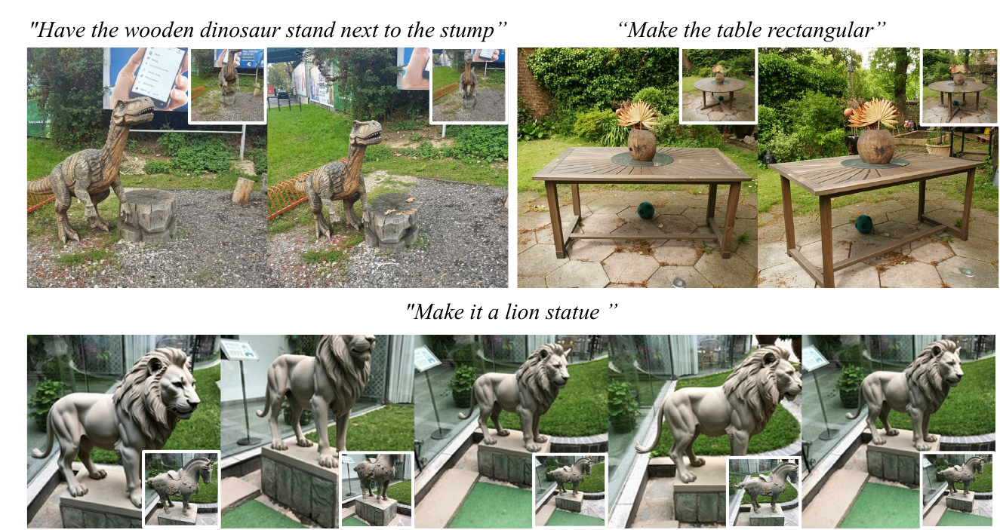
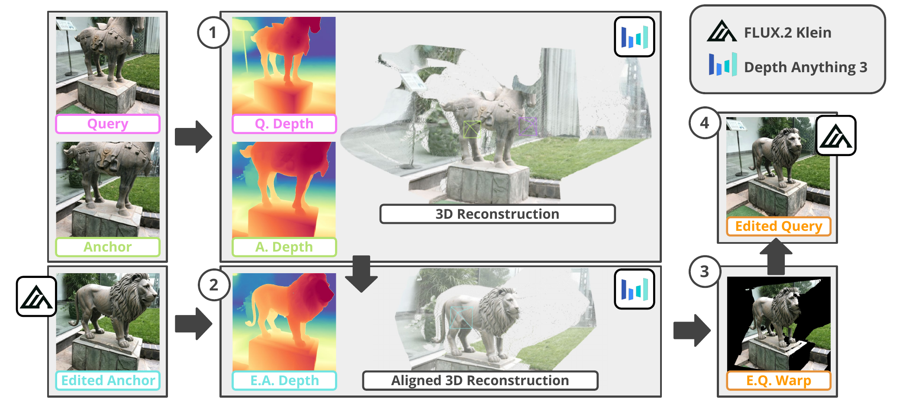
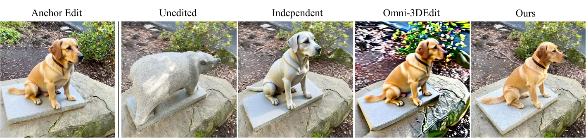
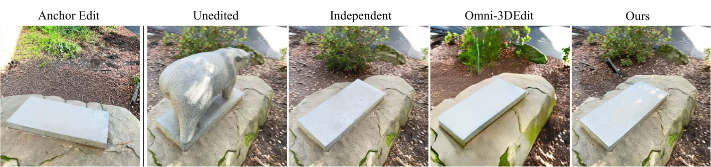
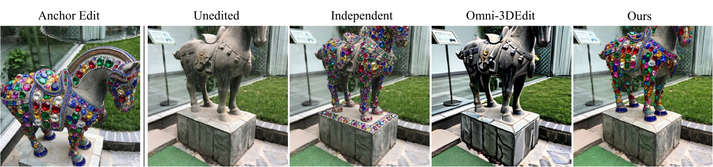
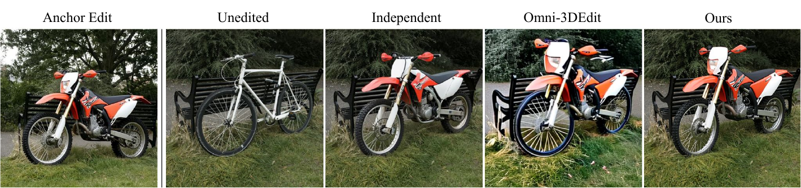
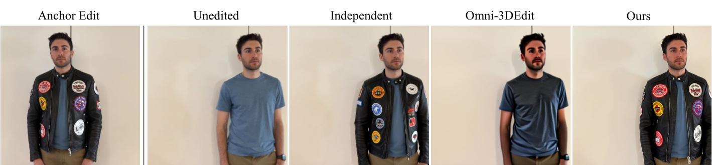

Our method handles various types of edits including significant changes in scene geometry. The edits are both photometrically and geometrically consistent across the views.
Recent developments in multi-view image editing with generative models have brought us a step closer toward general 3D content generation and customization. Most existing works focus on rigid or appearance-only edits by utilizing the geometry of the unedited scene. This naturally limits these methods to edits that preserve the underlying scene structure. Other approaches are trained for specific image editing tasks, such as object removal and insertion. Despite this progress, general nonrigid edits, i.e., edits that substantially change the scene geometry, remain challenging for existing methods.
We propose GeM-NR, a fast and flexible training-free approach for general multi-view consistent image editing, including edits that drastically change the geometry and appearance of the scene. Given an anchor image edited with a chosen backbone editor (such as FLUX, Qwen, BrushNet) and a query unedited image, GeM-NR edits the query image consistently with the anchor edit. The method incorporates multiple stages: (i) depth map estimation, where we propose a strategy to maximize the alignment between the 3D point clouds of the edited and unedited scenes, (ii) projection onto a query viewpoint, and (iii) refinement of the obtained image conditioned on the unedited query. The conditioning-based formulation scales well from two to many views of an object. We demonstrate the ability of our method to handle edits with significant changes in geometry and appearance, something that existing methods struggle with. We perform an extensive evaluation showing that our method improves consistency for a wide variety of edit tasks, including generating 3D representations of the edited scene. Both quantitative and qualitative results indicate the state-of-the-art performance of our method in terms of edit quality as well as geometric and photometric consistency across multiple views.

"Change bear statue to a sitting dog"

"Remove the bear statue"

"Add large colorful shiny gemstones to the statue"

"Change the bicycle to a dirt motorbike"

"Give him a leather jacket with different patches"

If you use this work or find it helpful, please consider citing:
@misc{
}